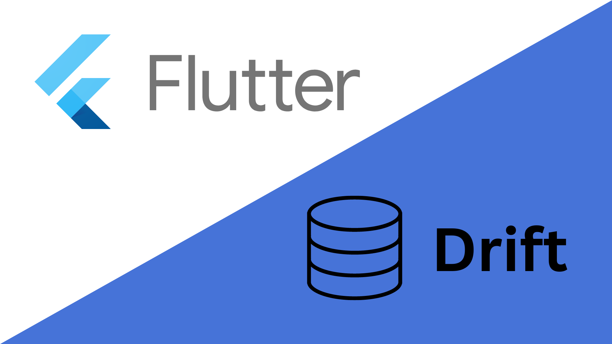

☰
×
Home
Blog
Kontakt
Home
Blog
Kontakt
Blog

Flutter Drift
18. September 2024
Flutter Hive
12. September 2024
Die 5 besten IDEs & Texteditors für Flutter
4. September 2024
Flutter shared preferences: Einstellungen speichern
4. September 2024
Flutter http vs dio
4. September 2024